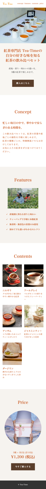

LP制作
紅茶の飲み比べセット
オリジナルで作成したLPです。
紅茶に深く触れたことのない人に向けて、世界観をイメージしやすい文字配色や欲しい情報をスムーズに得やすい構成を意識しました。
WORKS

LP制作
オリジナルで作成したLPです。
紅茶に深く触れたことのない人に向けて、世界観をイメージしやすい文字配色や欲しい情報をスムーズに得やすい構成を意識しました。
小規模サイト制作
オリジナルで作成したシングルページサイトです。
JavaScriptを複数実装し、どのサイズの媒体でも見やすく操作しやすい機能実装を心掛けました。
コーポレートサイト制作
ここのポートフォリオサイトです。
Canva AIで作成したデザインを基にHTML/CSS/JavaScriptで再構築。不要な機能やアニメーションを整理・調整し、お問い合わせAPIの導入やレスポンシブ対応まで行いました。
現在、実績を準備中です。
新しい制作物が完成次第、随時更新していきます。